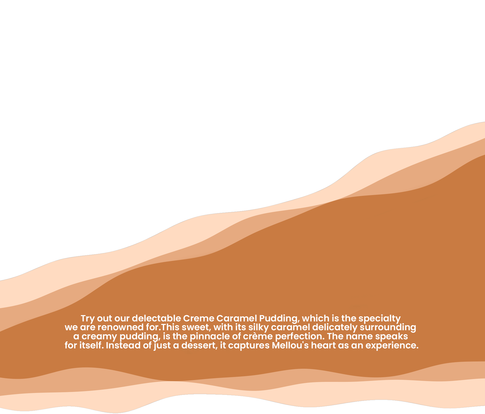
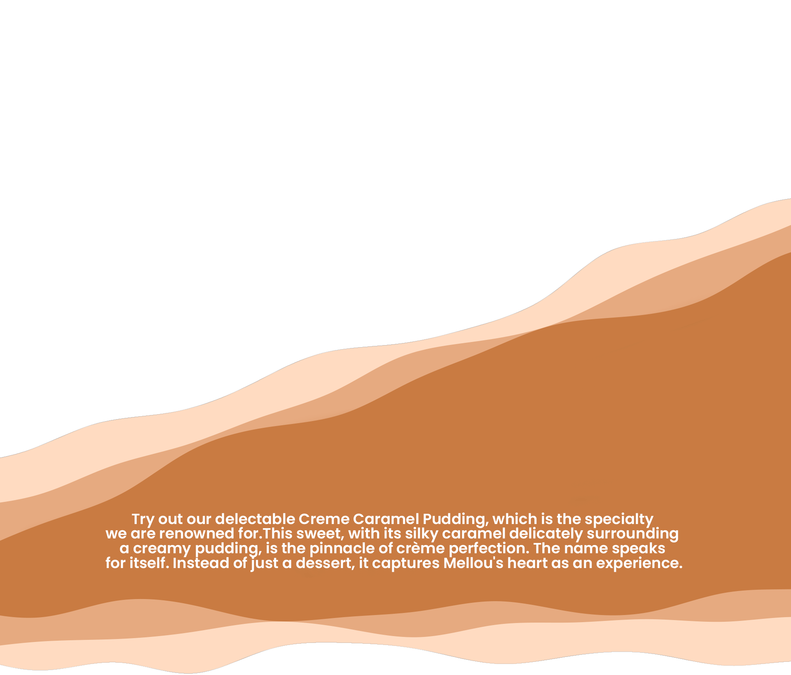
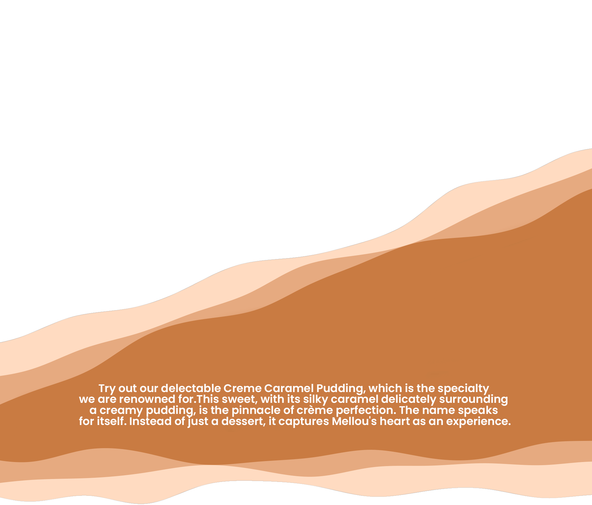

Home
About Us
Products
Contact Us
@mellou.india
WHERE TO BUY?
Find a store
a pudding for everyone
We are aware of the challenges searching for tasty meals presents for persons with dietary restrictions. As an outcome, Mellou proudly provides a variety of puddings that are: Egg-Free: For people who follow an egg-free diet, Mellou offers a tantalising selection of puddings without eggs, allowing you to savour every spoonful without worry. Vegetarian: Our dairy-free puddings are evidence that rich, creamy, and incredibly satisfying desserts don't require animal products. Gluten-Free: For anyone with celiac illness or gluten sensitivity, Mellou's gluten-free puddings are a revelation.
quality beyond compromise
The highest standards of quality are something that Mellou is committed to sustaining. We utilise only the finest ingredients to precisely prepare our puddings, which results in an explosion of flavour and delight with every bite. Every element, from the depth of our foundation to the carefully chosen toppings and mix-ins, works together to create an unforgettable experience.
a pudding for every occasion
Mellou puddings are occasions for joy, consolation, and celebration rather than merely being desserts. No matter the occasion—whether you're treating yourself after a long day at work or simply want to satisfy your sweet tooth—our puddings make the perfect partners. Due to the enormous selection of flavours and textures, there is a Mellou pudding to suit every situation and mood.
Our Partners
products.
have you
tried our
best selling
pudding?
introducing

Frequently asked Questions
What makes Mellou puddings unique?
Mellou puddings stand out due to their commitment to blending delight with wellness. Every spoonful offers a symphony of tastes while being vegetarian, egg-free, and gluten-free, ensuring a guilt-free indulgence.
Are Mellou puddings suitable for vegetarians?
Yes, Mellou puddings are 100% vegetarian. They offer a tantalizing selection of egg-free options, ensuring that vegetarians can have every spoonful without worry.
Do Mellou puddings contain eggs?
No, Mellou puddings are egg-free, catering to individuals who follow an egg-free diet. This ensures that everyone can enjoy their creamy texture and delicious flavors without any concerns.
Are Mellou puddings gluten-free?
Absolutely, Mellou puddings are gluten-free, making them suitable for individuals with celiac disease or gluten sensitivity. Indulge in the rich, creamy goodness of our puddings without worrying about gluten.
What flavors do Mellou puddings come in?
Mellou puddings come in a variety of flavors, including Signature Creme Caramel, Chocolou, Louberry, and Mirtillou. Each flavor offers a unique and delightful taste experience.
Where can I purchase Mellou puddings?
Mellou puddings are available for purchase at selected retailers and online. Check our website for more information on where to find our delectable puddings near you.
Are Mellou puddings ready to eat?
Yes, Mellou puddings are ready to eat straight from the packaging. Simply grab a spoon and indulge in the creamy goodness of our delicious puddings without any hassle.
How should Mellou puddings be stored?
Mellou puddings should be stored in a cool, dry place away from direct sunlight. Once opened, refrigerate any leftover pudding and consume within a few days for the best taste and freshness.
Are Mellou puddings suitable for children?
Yes, Mellou puddings are suitable for children and make a delightful treat for kids of all ages. With their irresistible flavors and creamy texture, Mellou puddings are sure to be a hit with the little ones.


 
